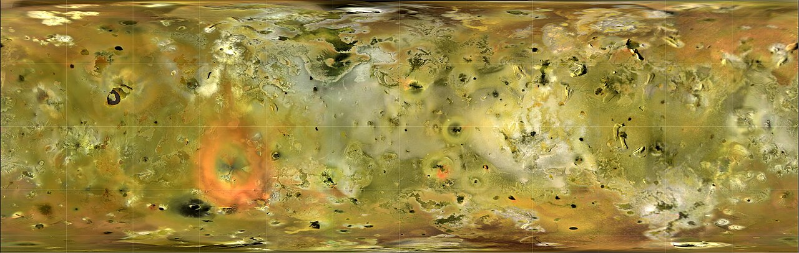

Io is a satellite of Jupiter and is the third in size after Ganymede and Callisto.
It is slightly larger than Earth's Moon.
Discovered by Galileo Galilei in 1610, it is the innermost of the four Galilean moons.
It get its name from the mythological figure Io, a priestess of Hera who was seduced by Zeus.
Io is the most volcanically active celestial body in the Solar System.
This is because of the gravitational pull of Jupiter on one side, and Ganymede and Europa on the other side.
Together these three satellites are in a orbital resonance with each other.
Volcano eruptions can be so powerful that Earth telescopes can see them.
Name
Io is named after the mythological priestess of Hera who was one of the lovers of Zeus.
After he raped Io, he then turned her into a heifer in order to hide her from his wife Hera.
The theme of naming the moons after Zeus' lovers was first suggested by Johannes Kepler and later adopted by Simon Marius.
The names weren't accepted initially until the discovery of the moons of Saturn.
Before that, the four Galilean moons were refered to as Jupiter I through IV in order from closest to furthest (Io was Jupiter I).
Discovery
In 1610 Galileo Galilei discovered four "stars" around Jupiter that he found to be moving.
He later concluded that the bodies were moving around Jupiter.
Around the same time, Simon Marius discovers the moons independently.
Orbit and rotation
Io orbits Jupiter at an average distance of about 421,700 kilometers.
This close proximity to Jupiter subjects Io to immense tidal heating.
Only four satellites are closer to Jupiter - Metis, Adrastea, Amalthea, and Thebe.
Io completes one orbit around Jupiter in approximately 1.77 Earth days.
This rapid orbital period is the shortest among the Galilean moons.
Just like every other round moon, Io is tidally locked.
It is in a 2:1 orbital resonance with Europa and a 4:1 resonance with Ganymede.
The orbit has an eccentricity of 0.0041, which heats up the interior periodically, contributing to the activity of its interior.
Physical characteristics
Size
Io is the fourth-largest moon of Jupiter.
It has a diameter of approximately 3,642 kilometers, making it slightly larger than Earth's Moon.
Its mass is about 8.93 × 10^22 kilograms, or roughly 21% of the mass of the Moon.
Internal structure
Io is believed to have a differentiated interior, consisting of several distinct layers.
At the core, Io likely has a small, molten iron or iron-sulfur core, which is responsible for contributing to the magnetic field of Jupiter, but not giving it one.
Surrounding this core is a mantle composed of molten and partially molten rock, primarily ultramafic (very high in magnesium- and iron) minerals.
The intense tidal forces exerted by Jupiter cause significant flexing of Io's interior, generating a tremendous amount of heat through a process called tidal heating.
This heat keeps a significant portion of Io's mantle in a molten state, driving the moon's extraordinary volcanic activity.
The outermost layer is a thin crust of solid silicate rock, which is continually resurfaced by volcanic eruptions.

Enhanced color satellite map of Io
Io and the volcano Pele with its reddish ring
External structure
Io's surface is shaped by its dynamic and ever-changing surface, which is the result of its intense volcanic activity.
The surface is covered with a variety of volcanic features, including lava flows, volcanic calderas, and extensive plains of sulfur and sulfur dioxide.
The most prominent features are the numerous volcanoes and lava lakes, which are constantly erupting and resurfacing the moon.
Io's surface is relatively young, with an estimated age of only a few million years in some regions, due to the continuous resurfacing by volcanic activity.
Io's surface is covered in various materials with different colors.
Yellow and white regions are primarily composed of sulfur and sulfur dioxide, while red and black areas are rich in silicates and other minerals.
Thus, Io lacks impact craters like other satellites (another exception is Europa).
The atmosphere of Io is extremely thin and is primarily composed of sulfur dioxide, with minor sulfur oxide, sodium chloride and atomic sulfur and oxygen.
A so called "post-eclipse brightening" has been noticed, suggesting that the atmosphere leave "frost" on top of the surface while in Jupiter's shadow.
The surface radiation levels on Io is 36 000 mSv per day, the highest of the four Galilean moons.
Radiation this strong breaks down material like cyclical sulfur.
It is also makes it challenging to send an orbiter around Io.
Europa is similarly challenging, although the levels there are five times less than on Io.
Timelapse of Tvashtar Patera erupting, seen from New Horizon
Volcanic Activity
Io is the most volcanically active body in the solar system, with hundreds of volcanoes and volcanic features scattered across its surface.
The volcanic activity is driven by the intense tidal heating caused by Jupiter's gravitational pull and the orbital resonances with Europa and Ganymede.
This heating generates enormous amounts of energy within Io's interior, leading to frequent and powerful volcanic eruptions that can be observed from Earth.
The eruptions on Io can be both effusive, producing vast lava flows, and explosive, sending plumes of volcanic material high into the moon's thin atmosphere.
Some of the most notable volcanic features on Io include: paterae (volcanic craters) like Loki, Tvashtar, Gish Bar, and Tupan; volcanoes like Pele, Prometheus, Thor, Surt, and Amirani; flucti (lava flows) like Sobo Fluctus; tholi (shield volcanoes); valles, etc.
The volcanic activity on Io not only shapes its surface but also contributes to its tenuous atmosphere.
Exploration
Pioneer 10 and 11, launched in the early 1970s, were the first to fly by Jupiter and Io.
They provided the initial close-up images of Io, revealing its colorful surface and hinting at its volcanic nature.
They also found the first signs of an athmosphere.
The Voyager 1 and 2 spacecraft captured detailed images of Io during their flybys in 1979.
These images confirmed the presence of active volcanoes and provided the first evidence of Io's intense volcanic activity.
The Voyager images in particular revealed nine different volcanic plumes.
Voyager 2's flyby also revealed that some areas of the surface have changed and that most of the plumes were still active.
The Galileo spacecraft, which orbited Jupiter from 1995 to 2003, conducted extensive observations of Io.
Galileo's instruments detected numerous active volcanoes, measured the composition of Io's atmosphere and significantly advanced our understanding of Io's internal structure and volcanic processes.
Cassini and New Horizons made some distant observations of the volcanoes, including a large plume of Tvashtar Patera.
Further observations were made with Juno during the extension of the mission.
JUICE, which is on its way to the Jovian system to study its icy moons, and Europa Clipper, which will orbit Jupiter to observe Europa, are not going to focus on Io, but might monitor the volcanic activity from a distance.
Io Volcanic Observer was a low-cost mission proposal that was planned to conduct a detailed study of Io's volcanic activity, but was cancelled in favor of DAVINCI+ and VERITAS to visit Venus.
The mission would have used Io to learn about other tidally heated worlds like Europa, Ganymede, Titan, and Enceladus.